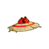
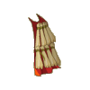
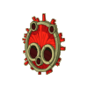
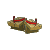
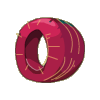
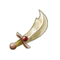

Menu barbok'you

| Niveau 98 | Chapeau Feudala | ||
|---|---|---|---|
| Recettes : | Caractéristiques : | Conditions : | |
|  | 50 Artefact pandawushu feu 12 Peau de kitsou nufeu 5 Poils de kitsou nufeu 5 Peau de pandikaze 4 Poils de kitsou nae 1 Saphir 1 Etoffe de pandikaze |
+41 à 60 vitalité +21 à 30 sagesse +26 à 40 intelligence +6 à 10 prospection 6 à 10% résistance feu 6 à 10% résistance air |
aucune |
| Remarques : | |||
| Niveau 92 | Cape Feudala | ||
|---|---|---|---|
| Recettes : | Caractéristiques : | Conditions : | |
|  | 50 Artefact pandawushu feu 10 Poils de pandikaze 2 Poils de kitsou nufeu 2 Poils de kitsou nae 2 Poils de kitsou nere 2 Poils de kitsou nakwa 1 Etoffe de pandikaze |
+26 à 45 vitalité +16 à 25 sagesse +3 à 4 CC +4 à 5 résistance eau +4 à 5 résistance terre 6 à 10% résistance eau 6 à 10% résistance terre |
aucune |
| Remarques : | |||
| Niveau 1 | Bouclier Feudala | ||
|---|---|---|---|
| Recettes : | Caractéristiques : | Conditions : | |
|  | 50 Artefact pandawushu feu 15 Châtaignier 13 Lingot d'or 4 Bambou sombre 2 Carapace scara rouge 1 Peau de maho firefoux 1 Orme |
21 à 25% rés. feu aux combattants +12 à 15 rés. air aux combattants |
grade > 5 |
| Remarques : | |||
| Niveau 68 | Geta Feudala | ||
|---|---|---|---|
| Recettes : | Caractéristiques : | Conditions : | |
|  | 50 Artefact Pandawashu feu 12 Bois de Bambou 10 Bambou sombre 10 Peau kitsou nufeu 10 Peau de cooleuvre 1 Peau de pandule |
+1 PM +26 à 40 agilité +16 à 25 intelligence +2 à 3 CC +6 à 10 prospection |
aucune |
| Remarques : | |||
| Niveau 81 | Alliance Feudala | ||
|---|---|---|---|
| Recettes : | Caractéristiques : | Conditions : | |
|  | 50 Artefact pandawushu feu 8 Bambou sombre 5 Pyrute 5 Ebene 3 Agathe 6 Aluminite 1 Aigue-marine |
+21 à 30 intelligence +21 à 30 sagesse +2 à 3 CC +4 à 5 soins 8 à 10% résistance eau |
aucune |
| Remarques : | |||
| Niveau 91 | Amulette Feudala | ||
|---|---|---|---|
| Recettes : | Caractéristiques : | Conditions : | |
| 50 Artefact pandawushu feu 10 Bambou sombre 10 Pyruthe 5 Rutile 4 Agathe 3 Emeraude 2 Ecorce magique de bulbiflore |
+1 PA +31 à 50 vitalité +21 à 40 intelligence +21 à 40 chance +3 à 5 soins +7 à 10% resistance air |
aucune | |
| Remarques : | |||
| Niveau 81 | Ceinture Feudala | ||
|---|---|---|---|
| Recettes : | Caractéristiques : | Conditions : | |
| 50 Artefact pandawashu feu 25 Cuir porkass 20 Poils de pandikaze 15 Peau de pandikaze 2 Peau de kitsou nefeu 1 Etoffe de pandikaze 20 Bambou sombre |
+32 à 45 vitalité +21 à 40 intelligence +4 à 5 CC +4 à 5 soins +4 à 5 dommages +4 à 5 résistance neutre +4 à 5 résistance feu |
aucune | |
| Remarques : | |||
| Niveau 76 | Sabre Feudala | |||
|---|---|---|---|---|
| Recettes : | Effets : | Caractéristiques : | Conditions : | |
|  | 50 Artefact pandawashu feu 3 Pyruthe 3 Rutile 1 Agathe 1 Aigue-marine 1 Topaze |
Dom : 11 à 30 (feu) Vole : 2 à 3 PV (feu) PA perdu à la cible : 1 +26 à 50 vitalité +21 à 35 intelligence +2 à 3 CC |
PA : 6 Portée : 1 à 1 Bonus CC : +5 Critique : 1/50 Echec : 1/50 |
int > 200 agilité > 60 |
| Remarques : | ||||
| 1 Items | Aucun bonus |
|---|---|
| 2 Items | +10 Vitalité / +2 Soins |
| 3 Items | +20 Vitalité / +4 Soins |
| 4 Items | +30 Vitalité / +6 Soins / +100 Initiative |
| 5 Items | +40 Vitalité / +8 Soins / +150 Initiative |
| 6 Items | +50 Vitalité / +10 Soins / +200 Initiative / +20 Intelligence / +10 Sagesse |
| 7 Items | +60 Vitalité / +12 Soins / +250 Initiative / +40 Intelligence / +20 Sagesse / +1 Portée |
| 8 Items | +80 Vitalité / +14 Soins / +500 Initiative / +80 Intelligence / +40 Sagesse / +1 Portée / +1 PM |
Dofus est un MMORPG édité par Ankama." Barbok " est un site non-officiel sans aucun lien avec Ankama.
Toutes les illustrations sont la propriété d'Ankama Studio et de Dofus. Le contenu de ce site a été rédigé initialement par Immortal, il ne s'agit que d'une remise en ligne effectuée par Eternal Games.